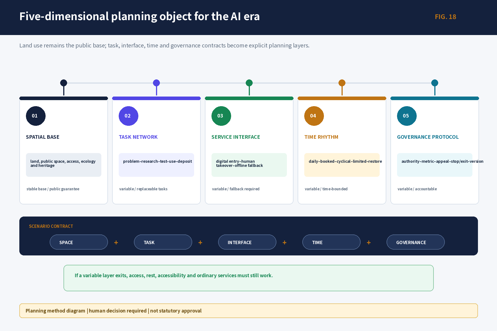
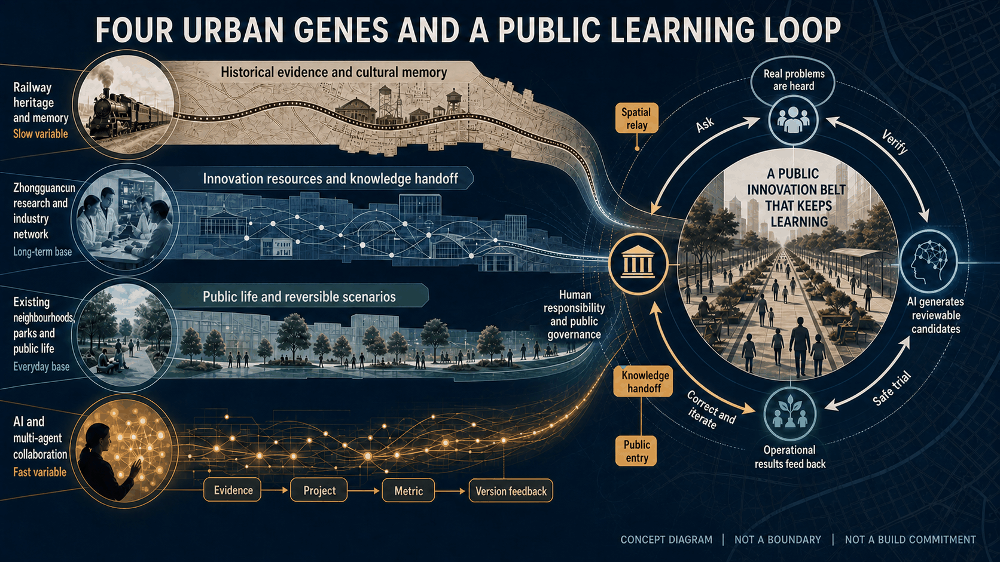
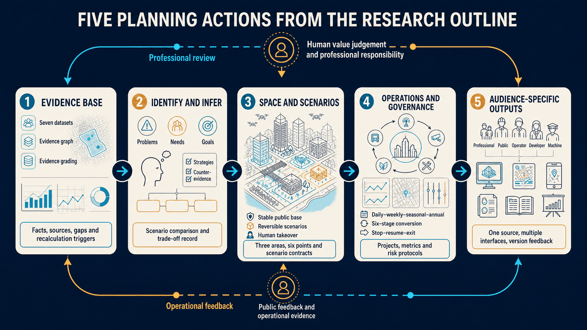
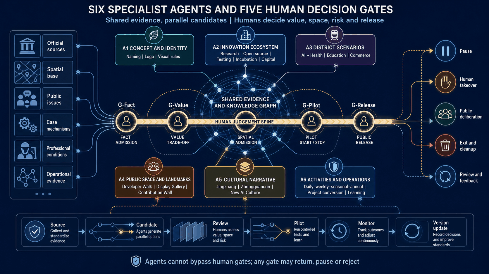
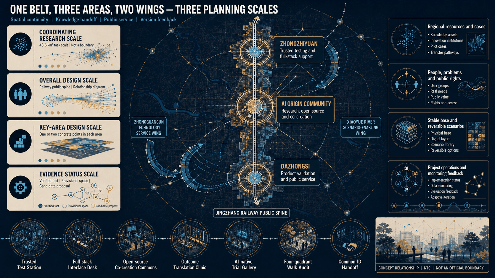
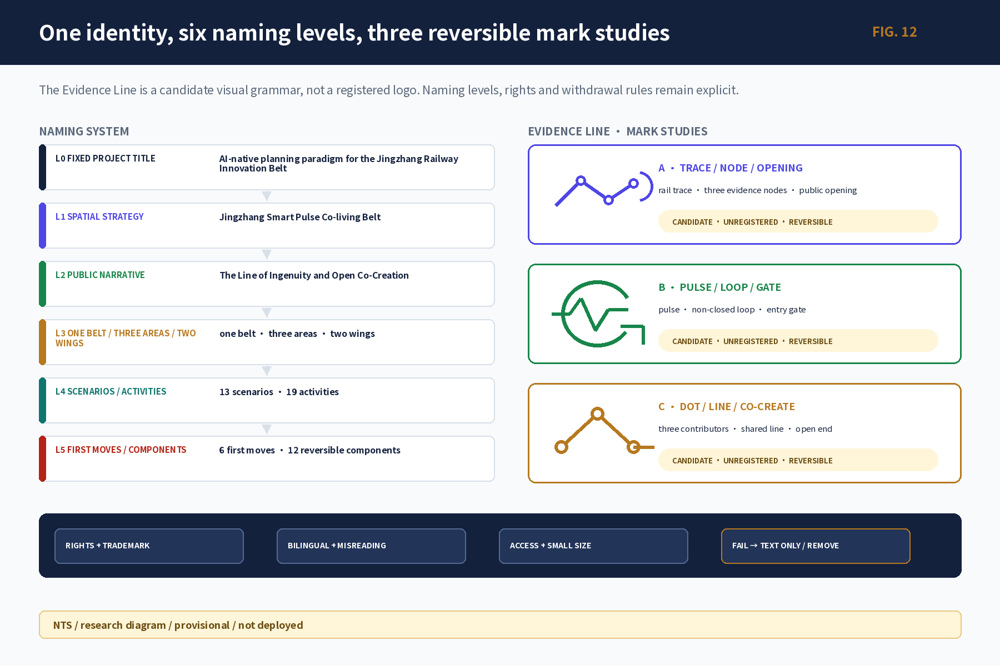
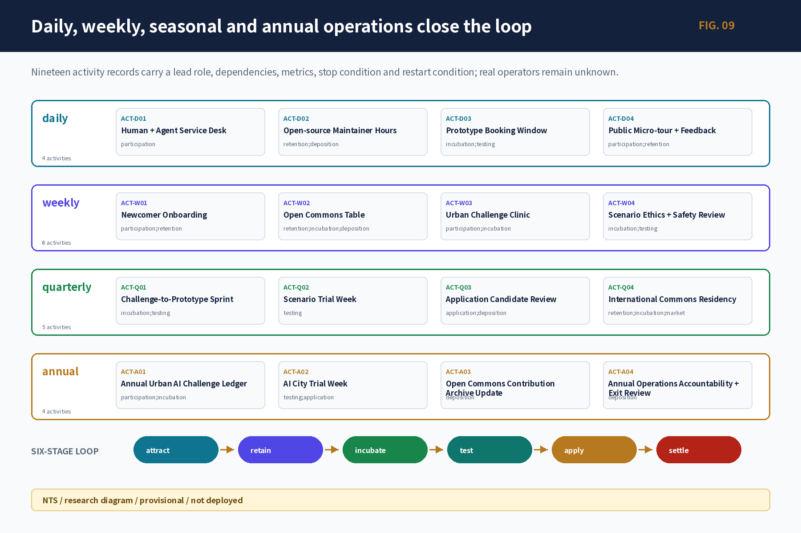
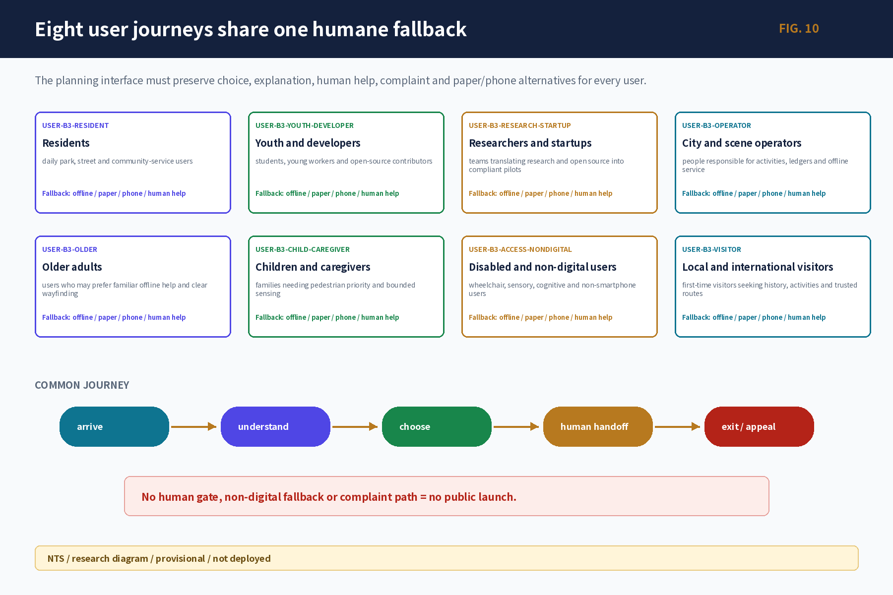
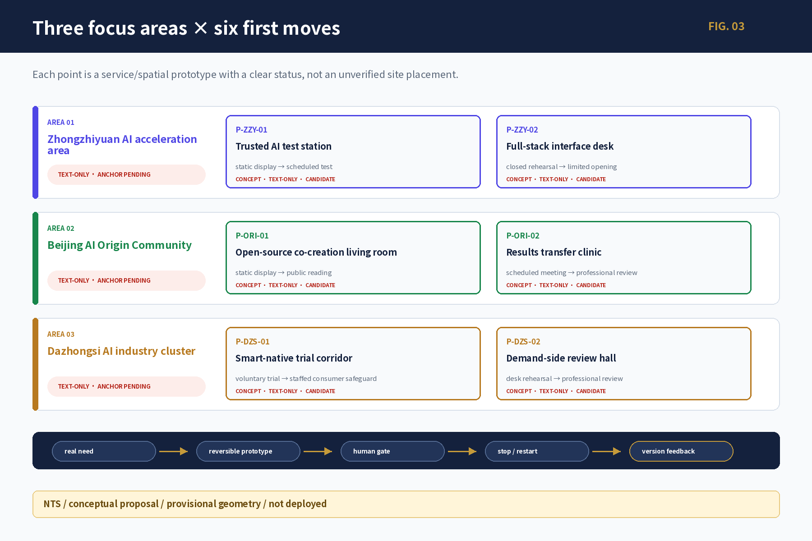
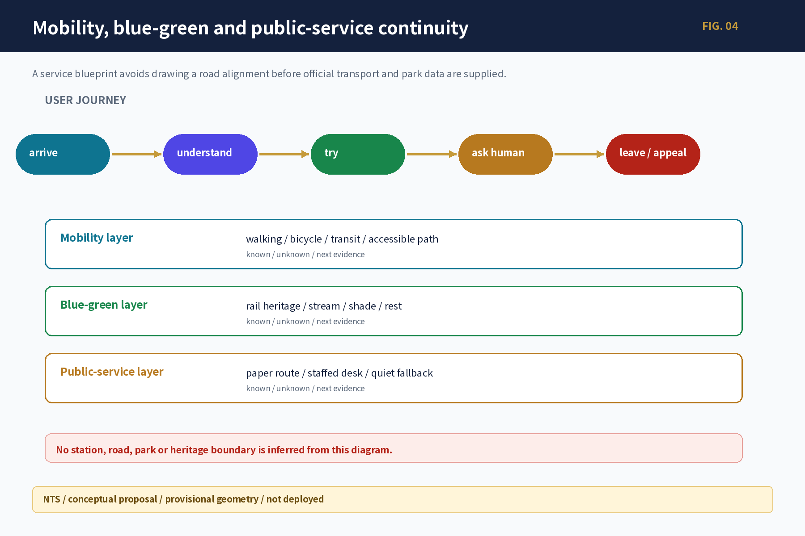

LAYER 1 / PRODUCTION
Planning-production Agents
Organise evidence, expose conflicts, generate alternatives, record counter-evidence and trigger recalculation; they do not replace professional judgement or public decisions.
A New AI-Native Planning Paradigm for the Jingzhang Railway Innovation Belt
AI-generated communication concept; not a site photograph, statutory plan, construction rendering, or delivery commitment.
Jingzhang does not use AI to repackage a conventional plan. Its heritage, innovation networks, everyday neighbourhoods and long-term public realm are used to test whether Agents can produce traceable and correctable planning judgements.
Organise evidence, expose conflicts, generate alternatives, record counter-evidence and trigger recalculation; they do not replace professional judgement or public decisions.
Turn the six tasks—identity, ecosystem, scenarios, public space, culture and operations—into reviewable outputs.
Candidate public-service and operating systems that still require authorisation and testing; they are not presented as deployed capabilities.
Three options were compared. Because heritage geometry, maintenance and rights were unresolved, the human gate rejected a permanent structure and retained the non-fixed “Developer Walk · Open-source Milestone Gallery”.
Open data could not verify station exits, roads or boundary anchors. The route was rejected and reframed as a joint field checklist for residents, disabled users, transport and operators.
Every fact has a source, every problem a counter-test, every proposal an alternative, every pilot human takeover, every metric power to change the plan, and every version a visible change record.

Static evidence, one preferred answer and one-off delivery become versioned evidence, scenarios, reversible pilots and urban learning.
Professional method diagram · not automated approval or implementation
Task, interface, time and governance become explicit planning layers above the stable spatial base.
Space—task—interface—time—governance · the public base survives variable-layer exit
Railway heritage, innovation, public life and fast AI enter one correctable loop.
FIG.21 · concept relationship · not a boundary
Evidence, reasoning, space, operations and audience-specific outputs form a two-way loop.
FIG.22 · human review + operational feedback
Every stage can return when evidence, space, risk or rights fail review.
FIG.20 · no automated approval
Parallel candidates remain under fact, value, spatial, pilot and release decisions.
FIG.24 · planning-production governance
The railway public spine links three areas, two wings and six first-move candidates.
FIG.23 · NTS · not an official boundaryThis offline, no-tracking research interaction filters scenario cards. The canvas shows three areas and six points without generating coordinates or engineering routes.
These navigation labels correspond to the visual gate; numbers carry state and do not turn provisional geometry into controls.
Each panel links back to sources, scenario cards, activity ledger or professional contracts; these are research deliverables, not a final brand, statutory map or deployed system.

L0—L5 naming, three candidate constructions and rights gate; no final VI released.
Research figure · NTS / provisional / not deployed
Seven cases, the eight-stage chain, G governance, K knowledge feedback and One Belt–Three Areas–Two Wings interfaces.
Research figure · NTS / provisional / not deployed
Users, spatial state, AI/human split and exit boundaries.
Research figure · NTS / provisional / not deployed
Problem, move, metric, human gate and stop/restart on one card.
Research figure · NTS / provisional / not deployed
Reversible components for the Developer Walk and Open-source Milestone Gallery, Agent Contribution Wall, and Jingzhang AI Time Station.
Research figure · NTS / provisional / not deployed
R1 Jingzhang at a Glance through R5 International Visitor Route remain hypothesis/provisional/text-only prototypes.
Research figure · NTS / provisional / not deployed
Activity roles, metrics, stop, restore and restart conditions.
Research figure · NTS / provisional / not deployed
Continuity from arrival and understanding to trial, referral and exit/appeal.
Research figure · NTS / provisional / not deployed
Paragraph, layer, metric, gap, recompute and complete-with-limitation boundaries.
Research figure · NTS / provisional / not deployed
Coordinator, six Agents, handoffs and quality gates.
Research figure · NTS / provisional / not deployedFull scenario cards, culture nodes/sources and the seven-dimension human-review navigator are packaged as offline machine-readable files.
One relationship diagram answers ‘how’; five evidence figures answer ‘why’. Figures do not replace official boundaries.

Each task shows a conclusion, concrete output and boundary; these are deliverables, not instructions to do later.
Jingzhang Smart Pulse Co-living Belt + L0—L5 naming tree + logo grammar
7 cases → R/O/C/D/T/I/F/M production chain
13 scenarios, 8 users, 6 prototypes, non-digital fallback
3 landmark prototypes + 12 public-space components
three-layer non-causal railway–Zhongguancun–AI narrative
19 daily/weekly/seasonal/annual activities + six-stage loop
Jingzhang Smart Pulse Co-living Belt is a working spatial-strategy name subject to public testing and authorization; The Line of Ingenuity and Open Co-Creation is a working L2 public narrative; seven global cases are used for mechanism comparison only.

Focus areas express functions and service prototypes; provisional placeholders are not upgraded to official coordinates.

Each card puts problem, move, users, decision signal and entry/stop gate together; these are candidate prototypes, not placed works.
Primary users: research/startup teams; test and safety staff
Minimum move: open verification desk → controlled test candidate
Decision signal: owner, fire/equipment/data authorization; takeover rehearsal; exit cleaning
Gate / stop: owner, fire/equipment/data clearance pending; offline simulation only
concept candidate / provisional area text-onlyPrimary users: project teams; demand side; public representatives
Minimum move: problem card → resource card → owner → pause/exit ledger
Decision signal: state disclosure; stop-cleaning rate; offline task completion
Gate / stop: no governance charter, human owner or appeal route = no opening
concept candidate / non-spatial servicePrimary users: developers; students; residents; non-digital participants
Minimum move: staffed desk + weekly open-source table + paper catalogue
Decision signal: license completeness; accessibility; maintenance response; correction/withdrawal
Gate / stop: unclear source or rights = remove or index-only display
concept candidate / provisional area text-onlyPrimary users: demand side; researchers; startups; IP/legal/test roles
Minimum move: problem card → evidence triage → human referral
Decision signal: first referral time; owner confirmation; return reason; 90-day maintainer
Gate / stop: no promise of funding, tenancy or procurement; unclear rights = return
concept candidate / provisional area text-onlyPrimary users: consumers; voluntary merchants; operations and rights staff
Minimum move: voluntary single service + ordinary-service fallback + 30-day trial
Decision signal: informed refusal; service response; complaint and data-cleaning loop
Gate / stop: no profiling, auto-pricing or hidden human; fairness/privacy unclear = stop
concept candidate / provisional area text-onlyPrimary users: commuters; older/disabled users; transport/accessibility specialists
Minimum move: paper four-quadrant walk audit → issue card → professional review
Decision signal: first-arrival task; accessibility breaks; owner response
Gate / stop: no station, road or right-of-way conclusion before verification
concept candidate / text-only pending official anchorFive Sentinel-2 L2A images are used only for background observation, corridor relationships and issue discovery; recut, overlay and recompute after official polygons, roads, ownership and engineering data arrive.

background observation / no pixel-derived boundary
Sentinel-2 L2A · 2026-07-15 · research background; provisional, not a statutory base map.
longitudinal relationship / provisional study placeholders
Sentinel-2 L2A · 2026-07-15 · research background; provisional, not a statutory base map.
background observation / carrier and boundary pending
Sentinel-2 L2A · 2026-07-15 · research background; provisional, not a statutory base map.
background observation / ownership and anchor pending
Sentinel-2 L2A · 2026-07-15 · research background; provisional, not a statutory base map.
background observation / station and road relation pending
Sentinel-2 L2A · 2026-07-15 · research background; provisional, not a statutory base map.Each card states user, action and stop/restart state; medical, education and commerce do not perform diagnosis, admission, credit or final consumer decisions.
User: developer / professional reviewer
desk simulation → controlled testUser: developer / resident
offline demo → booked trialUser: developer / student
static display → human co-creationUser: student / resident
paper entry → teacher / human supportUser: developer / public reader
static display → public readingUser: contributor / public
identity check → retractable creditUser: resident / caregiver
public information → human referralUser: resident / visitor
paper route → human interpretationUser: shopper / operator
voluntary trial → consumer safeguardUser: older / disabled user
observation → professional reviewUser: international visitor
bilingual display → human receptionUser: public / enterprise
anonymous browsing → authorized demoUser: community / operator
event → review and depositThree landmarks, twelve components, a three-layer non-causal cultural narrative, five R1–R5 route prototypes and nineteen daily/weekly/seasonal/annual activities turn the pilgrimage idea into a durable use loop.
Reversible, correctable, human-takeover public-space prototypes; no unverified site placement.
Railway, Zhongguancun and AI cultures are not written as an unverified causal history; routes start as text/paper versions.
All 19 activities have role, dependency, metric, stop, restore and restart conditions; real operators and baselines remain unknown.

The result is not a static final image but an offline set usable by public, planners, operators and machines.

unknown before operations start; the full metrics.json contains 28 records: 10 known / 18 unknown. The 10 known records are provisional work values or structural counts, not runtime performance.